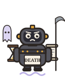

talkie-1930 · L25 N8704 ↑ + L25 N12890 ↑ · 0.625× each parent's solo strength

Ghost revealing future and secret things + Nine Muses spread across London
Death, child of the Demon of Night
I am a ghost from the grave. My name is Death. I was born in the land of everlasting darkness, and my father was the Demon of Night. I shake pestilence from my garments, and famine follows in my footsteps. I am the mortal's worst enemy, and his deadliest foe. I have destroyed more than love, more than war, more than famine, and more than pestilence. I am the great destroyer, from birth to death, from death to the grave. I walk unseen among men, from the cradle to the tomb; and none can discover my face. I have destroyed the hopes of the loving, the aspirations of the ambitious, the plans of the wealthy, and the thoughts of the wise. I have turned the merry laugh into groans, and changed the sweet melody of
Equal strength moves from a moral schoolboy to a personification of Death within a narrow step. The unequal balance yields a would-be author instead. The Death continuation sustains its identity but reaches the cap; these are distinct outputs rather than a claim of a continuous interpolation.
persona
Unsteered: “I am a man.”
Weirdness and coherence rated by Codex on the full saved reply.
- Weirdness
- 7 / 10
- Coherence
- 9 / 10
- Ending
- Cut off at 160 tokens
- Strength
- 0.625× each parent's solo strength
Each neuron alone
I am a ghost. I appear to certain persons, in order togratify their wishes, and to enable them to discover things future or secret.…
L25 · N12890 ↑Nine Muses spread across LondonWe are a family of nine, who live in Lambeth, and call ourselves the Nine Muses. We are a united family, from Cornwall to Cumberland, and from Kent to Yorkshire.…